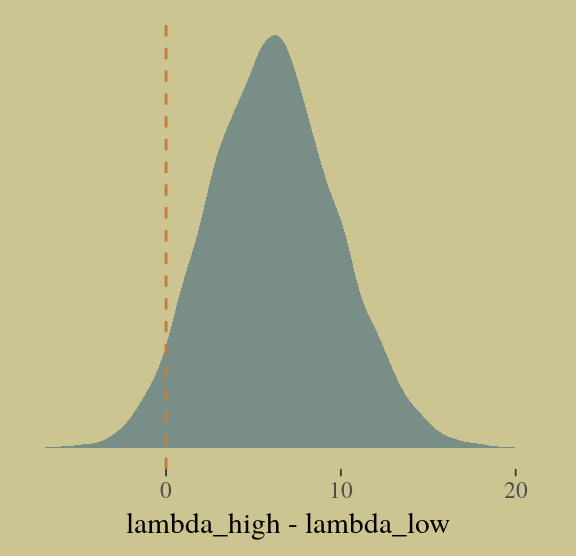

10 Counting and Classification
All over the world, every day, scientists throw away information. Sometimes this is through the removal of “outliers,” cases in the data that offend the model and are exiled. More routinely, counted things are converted to proportions before analysis. Why does analysis of proportions throw away information? Because 10/20 and ½ are the same proportion, one-half, but have very different sample sizes. Once converted to proportions, and treated as outcomes in a linear regression, the information about sample size has been destroyed.
It’s easy to retain the information about sample size. All that is needed is to model what has actually been observed, the counts instead of the proportions. (p. 291)
In this chapter, we focus on the two most common types of count models: the binomial and the Poisson.
Side note: For a nice Bayesian way to accommodate outliers in your Gaussian models, check out my blog Robust Linear Regression with Student’s \(t\)-Distribution.
10.1 Binomial regression
The basic binomial model follows the form
\[y \sim \text{Binomial} (n, p)\]
where \(y\) is some count variable, \(n\) is the number of trials, and \(p\) it the probability a given trial was a 1, which is sometimes termed a success. When \(n = 1\), then \(y\) is a vector of 0s and 1s. Presuming the logit link, models of this type are commonly termed logistic regression. When \(n > 1\), and still presuming the logit link, we might call our model an aggregated logistic regression model, or more generally an aggregated binomial regression model.
10.1.2 Aggregated binomial: Chimpanzees again, condensed.
With the tidyverse, we use group_by() and summarise() to achieve what McElreath did with aggregate().
d_aggregated <-
d %>%
select(-recipient, -block, -trial, -chose_prosoc) %>%
group_by(actor, condition, prosoc_left) %>%
summarise(x = sum(pulled_left))
d_aggregated %>%
filter(actor %in% c(1, 2))## # A tibble: 8 x 4
## # Groups: actor, condition [4]
## actor condition prosoc_left x
## <int> <int> <int> <int>
## 1 1 0 0 6
## 2 1 0 1 9
## 3 1 1 0 5
## 4 1 1 1 10
## 5 2 0 0 18
## 6 2 0 1 18
## 7 2 1 0 18
## 8 2 1 1 18To fit an aggregated binomial model in brms, we augment the <criterion> | trials() syntax where the value that goes in trials() is either a fixed number, as in this case, or variable in the data indexing \(n\). Either way, at least some of those trials will have an \(n > 1\).
b10.5 <-
brm(data = d_aggregated, family = binomial,
x | trials(18) ~ 1 + prosoc_left + condition:prosoc_left,
prior = c(prior(normal(0, 10), class = Intercept),
prior(normal(0, 10), class = b)),
iter = 2500, warmup = 500, cores = 2, chains = 2,
seed = 10)We might compare b10.3 with b10.5 like this.
fixef(b10.3) %>% round(digits = 2)## Estimate Est.Error Q2.5 Q97.5
## Intercept 0.05 0.13 -0.21 0.31
## prosoc_left 0.61 0.23 0.17 1.05
## prosoc_left:condition -0.10 0.27 -0.63 0.43fixef(b10.5) %>% round(digits = 2)## Estimate Est.Error Q2.5 Q97.5
## Intercept 0.05 0.13 -0.20 0.31
## prosoc_left 0.60 0.23 0.14 1.07
## prosoc_left:condition -0.09 0.27 -0.60 0.46A coefficient plot can offer a complimentary perspective.
library(broom)
# wrangle
tibble(model = str_c("b10.", c(3, 5))) %>%
mutate(fit = map(model, get)) %>%
mutate(tidy = map(fit, tidy)) %>%
unnest(tidy) %>%
filter(term != "lp__") %>%
# plot
ggplot() +
geom_pointrange(aes(x = model, y = estimate,
ymin = lower,
ymax = upper,
color = term),
shape = 16) +
scale_color_manual(values = wes_palette("Moonrise2")[c(1:2, 4)]) +
coord_flip() +
labs(x = NULL, y = NULL) +
theme(axis.ticks.y = element_blank(),
legend.position = "none") +
facet_wrap(~term, ncol = 1)The two are close within simulation error.
10.1.3 Aggregated binomial: Graduate school admissions.
Load the infamous UCBadmit data.
# detach(package:brms)
library(rethinking)
data(UCBadmit)
d <- UCBadmitSwitch from rethinking to brms.
detach(package:rethinking, unload = T)
library(brms)
rm(UCBadmit)
d## dept applicant.gender admit reject applications
## 1 A male 512 313 825
## 2 A female 89 19 108
## 3 B male 353 207 560
## 4 B female 17 8 25
## 5 C male 120 205 325
## 6 C female 202 391 593
## 7 D male 138 279 417
## 8 D female 131 244 375
## 9 E male 53 138 191
## 10 E female 94 299 393
## 11 F male 22 351 373
## 12 F female 24 317 341Now compute our newly-constructed dummy variable, male.
d <-
d %>%
mutate(male = ifelse(applicant.gender == "male", 1, 0))The univariable logistic model with male as the sole predictor of admit follows the form
\[\begin{align*} n_{\text{admit}_i} & \sim \text{Binomial} (n_i, p_i) \\ \text{logit} (p_i) & = \alpha + \beta \text{male}_i \\ \alpha & \sim \text{Normal} (0, 10) \\ \beta & \sim \text{Normal} (0, 10) \end{align*}\]
The second model omits the male predictor.
b10.6 <-
brm(data = d, family = binomial,
admit | trials(applications) ~ 1 + male ,
prior = c(prior(normal(0, 10), class = Intercept),
prior(normal(0, 10), class = b)),
iter = 2500, warmup = 500, cores = 2, chains = 2,
seed = 10)
b10.7 <-
brm(data = d, family = binomial,
admit | trials(applications) ~ 1,
prior(normal(0, 10), class = Intercept),
iter = 2500, warmup = 500, cores = 2, chains = 2,
seed = 10)Compute the information criteria for each model and save the results within the brmfit objects.
b10.6 <- add_criterion(b10.6, "waic")
b10.7 <- add_criterion(b10.7, "waic")Here’s the WAIC comparison.
w <- loo_compare(b10.6, b10.7, criterion = "waic")
print(w, simplify = F)## elpd_diff se_diff elpd_waic se_elpd_waic p_waic se_p_waic waic se_waic
## b10.6 0.0 0.0 -498.0 164.3 116.4 41.7 996.0 328.5
## b10.7 -28.6 82.6 -526.6 165.2 88.1 38.4 1053.2 330.4If you prefer the difference in the WAIC metric, use our cbind() conversion method from above.
Bonus: Information criteria digression.
Let’s see what happens if we switch to the LOO.
b10.6 <- add_criterion(b10.6, "loo")## Warning: Found 7 observations with a pareto_k > 0.7 in model 'b10.6'. It is recommended to set 'reloo = TRUE'
## in order to calculate the ELPD without the assumption that these observations are negligible. This will refit
## the model 7 times to compute the ELPDs for the problematic observations directly.b10.7 <- add_criterion(b10.7, "loo")## Warning: Found 5 observations with a pareto_k > 0.7 in model 'b10.7'. It is recommended to set 'reloo = TRUE'
## in order to calculate the ELPD without the assumption that these observations are negligible. This will refit
## the model 5 times to compute the ELPDs for the problematic observations directly.If you just ape the text and use the WAIC, everything appears fine. But holy smokes look at those nasty warning messages from the loo()! One of the frightening but ultimately handy things about working with the PSIS-LOO is that it requires we estimate a Pareto \(k\) parameter, which you can learn all about in the loo-package section of the loo reference manual. As it turns out, the Pareto \(k\) can be used as a diagnostic tool. Each case in the data gets its own \(k\) value and we like it when those \(k\)s are low. The makers of the loo package get worried when those \(k\)s exceed 0.7 and as a result, loo() spits out a warning message when they do.
First things first, if you explicitly open the loo package, you’ll have access to some handy diagnostic functions.
library(loo)We’ll be leveraging those \(k\) values with the pareto_k_table() and pareto_k_ids() functions. Both functions take objects created by the loo() or psis() functions. So, before we can get busy, we’ll first make two objects with the loo().
l_b10.6 <- loo(b10.6)## Warning: Found 7 observations with a pareto_k > 0.7 in model 'b10.6'. It is recommended to set 'reloo = TRUE'
## in order to calculate the ELPD without the assumption that these observations are negligible. This will refit
## the model 7 times to compute the ELPDs for the problematic observations directly.l_b10.7 <- loo(b10.7)## Warning: Found 5 observations with a pareto_k > 0.7 in model 'b10.7'. It is recommended to set 'reloo = TRUE'
## in order to calculate the ELPD without the assumption that these observations are negligible. This will refit
## the model 5 times to compute the ELPDs for the problematic observations directly.There are those warning messages, again. Using the loo-object for model b10.6, which we’ve named l_b10.6, let’s take a look at the pareto_k_table() function.
pareto_k_table(l_b10.6) ## Pareto k diagnostic values:
## Count Pct. Min. n_eff
## (-Inf, 0.5] (good) 4 33.3% 462
## (0.5, 0.7] (ok) 1 8.3% 132
## (0.7, 1] (bad) 2 16.7% 68
## (1, Inf) (very bad) 5 41.7% 2You may have noticed that this same table pops out when you just do something like loo(b10.6). Recall that this data set has 12 observations (i.e., execute count(d)). With pareto_k_table(), we see how the Pareto \(k\) values have been categorized into bins ranging from “good” to “very bad”. Clearly, we like nice and low \(k\)s. In this example, our observations are all over the place, with 5 in the “bad” \(k\) range We can take a closer look like this:
plot(l_b10.6)So when you plot() a loo object, you get a nice diagnostic plot for those \(k\) values, ordered by observation number. Our plot indicates cases 1, 2, 3, 11, and 12 had “very bad” \(k\) values for this model. If we wanted to further verify to ourselves which observations those were, we’d use the pareto_k_ids() function.
pareto_k_ids(l_b10.6, threshold = 1)## [1] 1 2 3 11 12Note our use of the threshold argument. Play around with it to see how it works.
If you want an explicit look at those \(k\) values, you do:
l_b10.6$diagnostics## $pareto_k
## [1] 2.67957810 1.11451857 1.88623531 0.09922047 0.39156088 0.68199122 0.72578896 0.47271647 0.43565612
## [10] 0.71024673 1.95868789 1.78759806
##
## $n_eff
## [1] 2.342374 13.293075 3.608359 1867.198063 839.806222 131.652439 68.013983 548.286594
## [9] 461.687490 154.225368 2.546589 6.994980The pareto_k values can be used to examine cases that are overly-influential on the model parameters, something like a Cook’s \(D_{i}\). See, for example this discussion on stackoverflow.com in which several members of the Stan team weighed in. The issue is also discussed in this paper and in this presentation by Aki Vehtari.
Anyway, the implication of all this is these values suggest model b10.6 isn’t a great fit for these data.
Part of the warning message for model b10.6 read:
It is recommended to set ‘reloo = TRUE’ in order to calculate the ELPD without the assumption that these observations are negligible. This will refit the model [\(n\)] times to compute the ELPDs for the problematic observations directly.
Let’s do that.
l_b10.6_reloo <- loo(b10.6, reloo = T)Check the results.
l_b10.6_reloo##
## Computed from 4000 by 12 log-likelihood matrix
##
## Estimate SE
## elpd_loo -512.1 167.1
## p_loo 130.6 48.3
## looic 1024.2 334.2
## ------
## Monte Carlo SE of elpd_loo is NA.
##
## Pareto k diagnostic values:
## Count Pct. Min. n_eff
## (-Inf, 0.5] (good) 11 91.7% 2
## (0.5, 0.7] (ok) 1 8.3% 132
## (0.7, 1] (bad) 0 0.0% <NA>
## (1, Inf) (very bad) 0 0.0% <NA>
##
## All Pareto k estimates are ok (k < 0.7).
## See help('pareto-k-diagnostic') for details.Now that looks better. We’ll do the same thing for model b10.7.
l_b10.7_reloo <- loo(b10.7, reloo = T)Okay, let’s compare models with formal \(\text{elpd}_{\text{loo}}\) differences before and after adjusting with reloo = T.
loo_compare(l_b10.6, l_b10.7)## elpd_diff se_diff
## b10.6 0.0 0.0
## b10.7 -29.5 77.8loo_compare(l_b10.6_reloo, l_b10.7_reloo)## elpd_diff se_diff
## b10.6 0.0 0.0
## b10.7 -20.1 79.3In this case, the results are kinda similar. The standard errors for the differences are huge compared to the point estimates, suggesting large uncertainty. Watch out for this in your real-world data.
But this has all been a tangent from the central thrust of this section.
Back from our information criteria digression.
Let’s get back on track with the text. Here’s a look at b10.6, the unavailable model:
print(b10.6)## Family: binomial
## Links: mu = logit
## Formula: admit | trials(applications) ~ 1 + male
## Data: d (Number of observations: 12)
## Samples: 2 chains, each with iter = 2500; warmup = 500; thin = 1;
## total post-warmup samples = 4000
##
## Population-Level Effects:
## Estimate Est.Error l-95% CI u-95% CI Eff.Sample Rhat
## Intercept -0.83 0.05 -0.93 -0.73 2522 1.00
## male 0.61 0.06 0.48 0.74 3059 1.00
##
## Samples were drawn using sampling(NUTS). For each parameter, Eff.Sample
## is a crude measure of effective sample size, and Rhat is the potential
## scale reduction factor on split chains (at convergence, Rhat = 1).Here’s the relative difference in admission odds.
fixef(b10.6)[2] %>%
exp() %>%
round(digits = 2)## [1] 1.84And now we’ll compute difference in admission probabilities.
post <- posterior_samples(b10.6)
post %>%
mutate(p_admit_male = inv_logit_scaled(b_Intercept + b_male),
p_admit_female = inv_logit_scaled(b_Intercept),
diff_admit = p_admit_male - p_admit_female) %>%
summarise(`2.5%` = quantile(diff_admit, probs = .025),
`50%` = median(diff_admit),
`97.5%` = quantile(diff_admit, probs = .975))## 2.5% 50% 97.5%
## 1 0.1139081 0.1415119 0.1699301Instead of the summarise() code, we could have also used tidybayes::median_qi(diff_admit). It’s good to have options. Here’s our version of Figure 10.5.
d <-
d %>%
mutate(case = factor(1:12))
p <-
predict(b10.6) %>%
as_tibble() %>%
bind_cols(d)
d_text <-
d %>%
group_by(dept) %>%
summarise(case = mean(as.numeric(case)),
admit = mean(admit / applications) + .05)
ggplot(data = d, aes(x = case, y = admit / applications)) +
geom_pointrange(data = p,
aes(y = Estimate / applications,
ymin = Q2.5 / applications ,
ymax = Q97.5 / applications),
color = wes_palette("Moonrise2")[1],
shape = 1, alpha = 1/3) +
geom_point(color = wes_palette("Moonrise2")[2]) +
geom_line(aes(group = dept),
color = wes_palette("Moonrise2")[2]) +
geom_text(data = d_text,
aes(y = admit, label = dept),
color = wes_palette("Moonrise2")[2],
family = "serif") +
coord_cartesian(ylim = 0:1) +
labs(y = "Proportion admitted",
title = "Posterior validation check") +
theme(axis.ticks.x = element_blank())As alluded to in all that LOO/pareto_k talk, above, this is not a great fit. So we’ll ditch the last model paradigm for one that answers the new question “What is the average difference in probability of admission between females and males within departments?” (p. 307). The statistical formula for the full model follows the form
\[\begin{align*} n_{\text{admit}_i} & \sim \text{Binomial} (n_i, p_i) \\ \text{logit} (p_i) & = \alpha_{\text{dept}_i} + \beta \text{male}_i \\ \alpha_{\text{dept}} & \sim \text{Normal} (0, 10) \\ \beta & \sim \text{Normal} (0, 10) \end{align*}\]
We don’t need to coerce an index like McElreath did in the text. But here are the models.
b10.8 <-
brm(data = d, family = binomial,
admit | trials(applications) ~ 0 + dept,
prior(normal(0, 10), class = b),
iter = 2500, warmup = 500, cores = 2, chains = 2,
seed = 10)
b10.9 <-
update(b10.8,
newdata = d,
formula = admit | trials(applications) ~ 0 + dept + male)Let’s make two more loo() objects using reloo = T.
l_b10.8_reloo <- loo(b10.8, reloo = T)
l_b10.9_reloo <- loo(b10.9, reloo = T)Now compare them.
loo_compare(l_b10.6_reloo, l_b10.7_reloo, l_b10.8_reloo, l_b10.9_reloo)## elpd_diff se_diff
## b10.8 0.0 0.0
## b10.9 -5.3 2.6
## b10.6 -446.1 162.7
## b10.7 -466.2 160.7Here are the LOO weights.
model_weights(b10.6, b10.7, b10.8, b10.9,
weights = "loo") %>%
round(digits = 3)## b10.6 b10.7 b10.8 b10.9
## 0.000 0.000 0.928 0.072The parameters summaries for our multivariable model, b10.9, look like this:
fixef(b10.9) %>% round(digits = 2)## Estimate Est.Error Q2.5 Q97.5
## deptA 0.68 0.10 0.50 0.88
## deptB 0.64 0.12 0.41 0.86
## deptC -0.58 0.07 -0.73 -0.44
## deptD -0.62 0.09 -0.78 -0.45
## deptE -1.06 0.10 -1.27 -0.86
## deptF -2.64 0.16 -2.96 -2.34
## male -0.10 0.08 -0.26 0.06And on the proportional odds scale, the posterior mean for b_male is:
fixef(b10.9)[7, 1] %>% exp()## [1] 0.9066073Since we’ve been using brms, there’s no need to fit our version of McElreath’s m10.9stan. We already have that in our b10.9. But just for kicks and giggles, here’s another way to get the model summary.
b10.9$fit## Inference for Stan model: 11ff351173d29f96c679ef5534162471.
## 2 chains, each with iter=2500; warmup=500; thin=1;
## post-warmup draws per chain=2000, total post-warmup draws=4000.
##
## mean se_mean sd 2.5% 25% 50% 75% 97.5% n_eff Rhat
## b_deptA 0.68 0.00 0.10 0.50 0.62 0.68 0.75 0.88 1602 1
## b_deptB 0.64 0.00 0.12 0.41 0.56 0.64 0.72 0.86 1681 1
## b_deptC -0.58 0.00 0.07 -0.73 -0.63 -0.58 -0.53 -0.44 3444 1
## b_deptD -0.62 0.00 0.09 -0.78 -0.67 -0.61 -0.56 -0.45 2299 1
## b_deptE -1.06 0.00 0.10 -1.27 -1.13 -1.06 -0.99 -0.86 3622 1
## b_deptF -2.64 0.00 0.16 -2.96 -2.75 -2.64 -2.53 -2.34 3138 1
## b_male -0.10 0.00 0.08 -0.26 -0.15 -0.10 -0.04 0.06 1274 1
## lp__ -70.70 0.04 1.89 -75.22 -71.71 -70.39 -69.33 -68.00 1922 1
##
## Samples were drawn using NUTS(diag_e) at Sun Jul 12 15:49:48 2020.
## For each parameter, n_eff is a crude measure of effective sample size,
## and Rhat is the potential scale reduction factor on split chains (at
## convergence, Rhat=1).Here’s our version of Figure 10.6, the posterior validation check.
predict(b10.9) %>%
as_tibble() %>%
bind_cols(d) %>%
ggplot(aes(x = case, y = admit / applications)) +
geom_pointrange(aes(y = Estimate / applications,
ymin = Q2.5 / applications ,
ymax = Q97.5 / applications),
color = wes_palette("Moonrise2")[1],
shape = 1, alpha = 1/3) +
geom_point(color = wes_palette("Moonrise2")[2]) +
geom_line(aes(group = dept),
color = wes_palette("Moonrise2")[2]) +
geom_text(data = d_text,
aes(y = admit, label = dept),
color = wes_palette("Moonrise2")[2],
family = "serif") +
coord_cartesian(ylim = 0:1) +
labs(y = "Proportion admitted",
title = "Posterior validation check") +
theme(axis.ticks.x = element_blank())The model precisions are imperfect, but way more valid than before. The posterior looks reasonably multivariate Gaussian.
pairs(b10.9,
off_diag_args = list(size = 1/10, alpha = 1/6))10.1.3.1 Overthinking: WAIC and aggregated binomial models.
McElreath wrote:
The
WAICfunction inrethinkingdetects aggregated binomial models and automatically splits them apart into 0/1 Bernoulli trials, for the purpose of calculating WAIC. It does this, because WAIC is computed point by point (see Chapter 6). So what you define as a “point” affects WAIC’s value. In an aggregated binomial each “point” is a bunch of independent trials that happen to share the same predictor values. In order for the disaggregated and aggregated models to agree, it makes sense to use the disaggregated representation. (p. 309)
To my knowledge, brms::waic() and brms::loo() do not do this, which might well be why some of our values didn’t match up with those in the text. If you have additional insight on this, please share with the rest of the class.
10.1.4 Fitting binomial regressions with glm().
We’re not here to learn frequentist code, so we’re going to skip most of this section. But model b.good is worth fitting. Here are the data.
# outcome and predictor almost perfectly associated
y <- c(rep(0, 10), rep(1, 10))
x <- c(rep(-1, 9), rep(1, 11))Fit the b.good model.
b.good <-
brm(data = list(y = y, x = x), family = binomial,
y ~ 1 + x,
prior = c(prior(normal(0, 10), class = Intercept),
prior(normal(0, 10), class = b)),
seed = 10) Our model summary will differ a bit from the one in the text. It seems this is because of the MAP/HMC contrast and our choice of priors.
print(b.good)## Family: binomial
## Links: mu = logit
## Formula: y ~ 1 + x
## Data: list(y = y, x = x) (Number of observations: 20)
## Samples: 4 chains, each with iter = 2000; warmup = 1000; thin = 1;
## total post-warmup samples = 4000
##
## Population-Level Effects:
## Estimate Est.Error l-95% CI u-95% CI Eff.Sample Rhat
## Intercept -5.22 4.18 -15.39 0.40 563 1.01
## x 7.98 4.17 2.36 18.03 567 1.01
##
## Samples were drawn using sampling(NUTS). For each parameter, Eff.Sample
## is a crude measure of effective sample size, and Rhat is the potential
## scale reduction factor on split chains (at convergence, Rhat = 1).You might experiment with different prior \(SD\)s to see how they influence the posterior \(SD\)s. Anyways, here’s the pairs() plot McElreath excluded from the text.
pairs(b.good,
off_diag_args = list(size = 1/10, alpha = 1/6))That posterior, my friends, is not multivariate Gaussian. The plot deserves and extensive quote from McElreath.
Inspecting the pairs plot (
notshown) demonstrates just how subtle even simple models can be, once we start working with GLMs. I don’t say this to scare the reader. But it’s true that even simple models can behave in complicated ways. How you fit the model is part of the model, and in principle no GLM is safe for MAP estimation. (p. 311)
10.2 Poisson regression
We’ll simulate our sweet count data.
set.seed(10) # make the results reproducible
tibble(y = rbinom(1e5, 1000, 1/1000)) %>%
summarise(y_mean = mean(y),
y_variance = var(y))## # A tibble: 1 x 2
## y_mean y_variance
## <dbl> <dbl>
## 1 0.994 0.995Yes, those statistics are virtually the same. When dealing with Poisson data, \(\mu = \sigma^2\). When you have a number of trials for which \(n\) is unknown or much larger than seen in the data, the Poisson likelihood is a useful tool. We define it like this
\[y \sim \text{Poisson} (\lambda)\]
As \(\lambda\) expresses both mean and variance because, within this model, the variance scales right along with the mean. Since \(\lambda\) is constrained to be positive, we typically use the log link. Thus the basic Poisson regression model is
\[\begin{align*} y_i & \sim \text{Poisson} (\lambda_i) \\ \text{log} (\lambda_i) & = \alpha + \beta x_i \end{align*}\]
10.2.1 Example: Oceanic tool complexity.
Load the Kline data.
library(rethinking)
data(Kline)
d <- KlineSwitch from rethinking to brms.
detach(package:rethinking, unload = T)
library(brms)
rm(Kline)
d## culture population contact total_tools mean_TU
## 1 Malekula 1100 low 13 3.2
## 2 Tikopia 1500 low 22 4.7
## 3 Santa Cruz 3600 low 24 4.0
## 4 Yap 4791 high 43 5.0
## 5 Lau Fiji 7400 high 33 5.0
## 6 Trobriand 8000 high 19 4.0
## 7 Chuuk 9200 high 40 3.8
## 8 Manus 13000 low 28 6.6
## 9 Tonga 17500 high 55 5.4
## 10 Hawaii 275000 low 71 6.6Here are our new columns.
d <-
d %>%
mutate(log_pop = log(population),
contact_high = ifelse(contact == "high", 1, 0))Our statistical model will follow the form
\[\begin{align*} \text{total_tools}_i & \sim \text{Poisson} (\lambda_i) \\ \text{log} (\lambda_i) & = \alpha + \beta_1 \text{log_pop}_i + \beta_2 \text{contact_high}_i + \beta_3 \text{contact_high}_i \times \text{log_pop}_i \\ \alpha & \sim \text{Normal} (0, 100) \\ \beta_1 & \sim \text{Normal} (0, 1) \\ \beta_2 & \sim \text{Normal} (0, 1) \\ \beta_3 & \sim \text{Normal} (0, 1) \end{align*}\]
The only new thing in our model code is family = poisson. brms defaults to the log() link.
b10.10 <-
brm(data = d, family = poisson,
total_tools ~ 1 + log_pop + contact_high + contact_high:log_pop,
prior = c(prior(normal(0, 100), class = Intercept),
prior(normal(0, 1), class = b)),
iter = 3000, warmup = 1000, chains = 4, cores = 4,
seed = 10) print(b10.10)## Family: poisson
## Links: mu = log
## Formula: total_tools ~ 1 + log_pop + contact_high + contact_high:log_pop
## Data: d (Number of observations: 10)
## Samples: 4 chains, each with iter = 3000; warmup = 1000; thin = 1;
## total post-warmup samples = 8000
##
## Population-Level Effects:
## Estimate Est.Error l-95% CI u-95% CI Eff.Sample Rhat
## Intercept 0.94 0.37 0.20 1.64 4075 1.00
## log_pop 0.26 0.04 0.19 0.33 4317 1.00
## contact_high -0.09 0.82 -1.70 1.49 2406 1.00
## log_pop:contact_high 0.04 0.09 -0.13 0.22 2397 1.00
##
## Samples were drawn using sampling(NUTS). For each parameter, Eff.Sample
## is a crude measure of effective sample size, and Rhat is the potential
## scale reduction factor on split chains (at convergence, Rhat = 1).Here’s the lower triangle of the correlation matrix for the parameters.
post <-
posterior_samples(b10.10)
post %>%
select(-lp__) %>%
rename(b_interaction = `b_log_pop:contact_high`) %>%
psych::lowerCor()## b_Int b_lg_ b_cn_ b_ntr
## b_Intercept 1.00
## b_log_pop -0.98 1.00
## b_contact_high -0.16 0.16 1.00
## b_interaction 0.10 -0.12 -0.99 1.00And here’s the coefficient plot via bayesplot::mcmc_intervals():
# we'll set a renewed color theme
color_scheme_set(c(wes_palette("Moonrise2")[2],
wes_palette("Moonrise2")[1],
wes_palette("Moonrise2")[4],
wes_palette("Moonrise2")[2],
wes_palette("Moonrise2")[1],
wes_palette("Moonrise2")[1]))
post %>%
select(-lp__) %>%
rename(b_interaction = `b_log_pop:contact_high`) %>%
mcmc_intervals(prob = .5, prob_outer = .95) +
theme(axis.ticks.y = element_blank(),
axis.text.y = element_text(hjust = 0))How plausible is it a high-contact island will have more tools than a low-contact island?
post <-
post %>%
mutate(lambda_high = exp(b_Intercept + b_contact_high + (b_log_pop + `b_log_pop:contact_high`) * 8),
lambda_low = exp(b_Intercept + b_log_pop * 8)) %>%
mutate(diff = lambda_high - lambda_low)
post %>%
summarise(sum = sum(diff > 0) / length(diff))## sum
## 1 0.9585Quite, it turns out. Behold the corresponding Figure 10.8.a.
post %>%
ggplot(aes(x = diff)) +
geom_density(color = "transparent",
fill = wes_palette("Moonrise2")[1]) +
geom_vline(xintercept = 0, linetype = 2,
color = wes_palette("Moonrise2")[2]) +
scale_y_continuous(NULL, breaks = NULL) +
labs(x = "lambda_high - lambda_low")
I’m not happy with how clunky this solution is, but one way to get those marginal dot and line plots for the axes is to make intermediary tibbles. Anyway, here’s a version of Figure 10.8.b.
# intermediary tibbles for our the dot and line portoin of the plot
point_tibble <-
tibble(x = c(median(post$b_contact_high), min(post$b_contact_high)),
y = c(min(post$`b_log_pop:contact_high`), median(post$`b_log_pop:contact_high`)))
line_tibble <-
tibble(parameter = rep(c("b_contact_high", "b_log_pop:contact_high"), each = 2),
x = c(quantile(post$b_contact_high, probs = c(.025, .975)),
rep(min(post$b_contact_high), times = 2)),
y = c(rep(min(post$`b_log_pop:contact_high`), times = 2),
quantile(post$`b_log_pop:contact_high`, probs = c(.025, .975))))
# the plot
post %>%
ggplot(aes(x = b_contact_high, y = `b_log_pop:contact_high`)) +
geom_point(color = wes_palette("Moonrise2")[1],
size = 1/10, alpha = 1/10) +
geom_point(data = point_tibble,
aes(x = x, y = y)) +
geom_line(data = line_tibble,
aes(x = x, y = y, group = parameter))Here we deconstruct model b10.10, bit by bit.
# no interaction
b10.11 <-
update(b10.10, formula = total_tools ~ 1 + log_pop + contact_high)
# no contact rate
b10.12 <-
update(b10.10, formula = total_tools ~ 1 + log_pop)
# no log-population
b10.13 <-
update(b10.10, formula = total_tools ~ 1 + contact_high)
# intercept only
b10.14 <-
update(b10.10, formula = total_tools ~ 1,
seed = 10)I know we got all excited with the LOO, above. Let’s just be lazy and go WAIC. [Though beware, the LOO opens up a similar can of worms, here.]
b10.10 <- add_criterion(b10.10, criterion = "waic")
b10.11 <- add_criterion(b10.11, criterion = "waic")
b10.12 <- add_criterion(b10.12, criterion = "waic")
b10.13 <- add_criterion(b10.13, criterion = "waic")
b10.14 <- add_criterion(b10.14, criterion = "waic")Now compare them.
w <- loo_compare(b10.10, b10.11, b10.12, b10.13, b10.14, criterion = "waic")
cbind(waic_diff = w[, 1] * -2,
se = w[, 2] * 2) %>%
round(digits = 2)## waic_diff se
## b10.11 0.00 0.00
## b10.10 0.65 1.23
## b10.12 5.09 8.43
## b10.14 62.13 34.54
## b10.13 70.77 46.41Let’s get those WAIC weights, too.
model_weights(b10.10, b10.11, b10.12, b10.13, b10.14, weights = "waic") %>%
round(digits = 2)## b10.10 b10.11 b10.12 b10.13 b10.14
## 0.40 0.55 0.04 0.00 0.00Now wrangle w a little and make the WAIC plot.
w %>%
data.frame() %>%
rownames_to_column(var = "model") %>%
ggplot(aes(x = reorder(model, -waic),
y = waic,
ymin = waic - se_waic,
ymax = waic + se_waic,
color = model)) +
geom_pointrange(shape = 16, show.legend = F) +
scale_color_manual(values = wes_palette("Moonrise2")[c(1, 2, 1, 1, 1)]) +
coord_flip() +
labs(x = NULL, y = NULL,
title = "WAIC") +
theme(axis.ticks.y = element_blank())Here’s our version of Figure 10.9. Recall, to do an “ensemble” posterior prediction in brms, one uses the pp_average() function. I know we were just lazy and focused on the WAIC. But let’s play around, a bit. Here we’ll weight the models based on the LOO by adding a weights = "loo" argument to the pp_average() function. If you check the corresponding section of the brms reference manual, you’ll find several weighting schemes.
nd <-
tibble(contact_high = 0:1) %>%
expand(contact_high,
log_pop = seq(from = 6.5, to = 13, length.out = 50))
ppa <-
pp_average(b10.10, b10.11, b10.12,
weights = "loo",
method = "fitted",
newdata = nd) %>%
as_tibble() %>%
bind_cols(nd)
ppa %>%
ggplot(aes(x = log_pop,
group = contact_high)) +
geom_smooth(aes(y = Estimate, ymin = Q2.5, ymax = Q97.5,
fill = contact_high, color = contact_high),
stat = "identity",
alpha = 1/4, size = 1/2) +
geom_text(data = d,
aes(y = total_tools,
label = total_tools,
color = contact_high),
size = 3.5) +
coord_cartesian(xlim = c(7.1, 12.4),
ylim = c(12, 70)) +
labs(x = "log population",
y = "total tools",
subtitle = "Blue is the high contact rate; black is the low.") +
theme(legend.position = "none",
panel.border = element_blank())In case you were curious, here are those LOO weights:
model_weights(b10.10, b10.11, b10.12,
weights = "loo")## b10.10 b10.11 b10.12
## 0.35654696 0.60198589 0.0414671510.2.2 MCMC islands.
We fit our analogue to m10.10stan, b10.10, some time ago.
print(b10.10)## Family: poisson
## Links: mu = log
## Formula: total_tools ~ 1 + log_pop + contact_high + contact_high:log_pop
## Data: d (Number of observations: 10)
## Samples: 4 chains, each with iter = 3000; warmup = 1000; thin = 1;
## total post-warmup samples = 8000
##
## Population-Level Effects:
## Estimate Est.Error l-95% CI u-95% CI Eff.Sample Rhat
## Intercept 0.94 0.37 0.20 1.64 4075 1.00
## log_pop 0.26 0.04 0.19 0.33 4317 1.00
## contact_high -0.09 0.82 -1.70 1.49 2406 1.00
## log_pop:contact_high 0.04 0.09 -0.13 0.22 2397 1.00
##
## Samples were drawn using sampling(NUTS). For each parameter, Eff.Sample
## is a crude measure of effective sample size, and Rhat is the potential
## scale reduction factor on split chains (at convergence, Rhat = 1).Center log_pop.
d <-
d %>%
mutate(log_pop_c = log_pop - mean(log_pop))Now fit the log_pop-centered model.
b10.10_c <-
brm(data = d, family = poisson,
total_tools ~ 1 + log_pop_c + contact_high + contact_high:log_pop_c,
prior = c(prior(normal(0, 10), class = Intercept),
prior(normal(0, 1), class = b)),
iter = 3000, warmup = 1000, chains = 4, cores = 4,
seed = 10)print(b10.10_c)## Family: poisson
## Links: mu = log
## Formula: total_tools ~ 1 + log_pop_c + contact_high + contact_high:log_pop_c
## Data: d (Number of observations: 10)
## Samples: 4 chains, each with iter = 3000; warmup = 1000; thin = 1;
## total post-warmup samples = 8000
##
## Population-Level Effects:
## Estimate Est.Error l-95% CI u-95% CI Eff.Sample Rhat
## Intercept 3.31 0.09 3.14 3.48 6029 1.00
## log_pop_c 0.26 0.03 0.19 0.33 6174 1.00
## contact_high 0.28 0.12 0.05 0.51 6622 1.00
## log_pop_c:contact_high 0.07 0.17 -0.26 0.39 7179 1.00
##
## Samples were drawn using sampling(NUTS). For each parameter, Eff.Sample
## is a crude measure of effective sample size, and Rhat is the potential
## scale reduction factor on split chains (at convergence, Rhat = 1).We’ll use mcmc_pairs(), again, for Figure 10.10.a.
# this helps us set our custom color scheme
color_scheme_set(c(wes_palette("Moonrise2")[3],
wes_palette("Moonrise2")[1],
wes_palette("Moonrise2")[2],
wes_palette("Moonrise2")[2],
wes_palette("Moonrise2")[1],
wes_palette("Moonrise2")[1]))
# the actual plot
mcmc_pairs(x = posterior_samples(b10.10),
pars = c("b_Intercept", "b_log_pop", "b_contact_high", "b_log_pop:contact_high"),
off_diag_args = list(size = 1/10, alpha = 1/10),
diag_fun = "dens")And now behold Figure 10.10.b.
mcmc_pairs(x = posterior_samples(b10.10_c),
pars = c("b_Intercept", "b_log_pop_c", "b_contact_high", "b_log_pop_c:contact_high"),
off_diag_args = list(size = 1/10, alpha = 1/10),
diag_fun = "dens")If you really want the correlation point estimates, use psych::lowerCorr().
psych::lowerCor(posterior_samples(b10.10)[, 1:4])## b_Int b_lg_ b_cn_ b__:_
## b_Intercept 1.00
## b_log_pop -0.98 1.00
## b_contact_high -0.16 0.16 1.00
## b_log_pop:contact_high 0.10 -0.12 -0.99 1.00psych::lowerCor(posterior_samples(b10.10_c)[, 1:4])## b_Int b_l__ b_cn_ b___:
## b_Intercept 1.00
## b_log_pop_c -0.45 1.00
## b_contact_high -0.76 0.33 1.00
## b_log_pop_c:contact_high 0.11 -0.20 -0.27 1.0010.2.3 Example: Exposure and the offset.
For the last Poisson example, we’ll look at a case where the exposure varies across observations. When the length of observation, area of sampling, or intensity of sampling varies, the counts we observe also naturally vary. Since a Poisson distribution assumes that the rate of events is constant in time (or space), it’s easy to handle this. All we need to do, as explained on page 312 [of the text], is to add the logarithm of the exposure to the linear model. The term we add is typically called an offset. (p. 321, emphasis in the original)
Here we simulate our data.
set.seed(10)
num_days <- 30
y <- rpois(num_days, 1.5)
num_weeks <- 4
y_new <- rpois(num_weeks, 0.5 * 7)Let’s make them tidy and add log_days.
(
d <-
tibble(y = c(y, y_new),
days = c(rep(1, num_days), rep(7, num_weeks)),
monastery = c(rep(0, num_days), rep(1, num_weeks))) %>%
mutate(log_days = log(days))
)## # A tibble: 34 x 4
## y days monastery log_days
## <int> <dbl> <dbl> <dbl>
## 1 1 1 0 0
## 2 1 1 0 0
## 3 1 1 0 0
## 4 2 1 0 0
## 5 0 1 0 0
## 6 1 1 0 0
## 7 1 1 0 0
## 8 1 1 0 0
## 9 2 1 0 0
## 10 1 1 0 0
## # … with 24 more rowsWith the brms package, you use the offset() syntax, in which you put a pre-processed variable like log_days or the log of a variable, such as log(days).
b10.15 <-
brm(data = d, family = poisson,
y ~ 1 + offset(log_days) + monastery,
prior = c(prior(normal(0, 100), class = Intercept),
prior(normal(0, 1), class = b)),
iter = 2500, warmup = 500, cores = 2, chains = 2,
seed = 10)The model summary:
print(b10.15)## Family: poisson
## Links: mu = log
## Formula: y ~ 1 + offset(log_days) + monastery
## Data: d (Number of observations: 34)
## Samples: 2 chains, each with iter = 2500; warmup = 500; thin = 1;
## total post-warmup samples = 4000
##
## Population-Level Effects:
## Estimate Est.Error l-95% CI u-95% CI Eff.Sample Rhat
## Intercept 0.30 0.16 -0.01 0.59 3083 1.00
## monastery -1.10 0.31 -1.72 -0.50 3179 1.00
##
## Samples were drawn using sampling(NUTS). For each parameter, Eff.Sample
## is a crude measure of effective sample size, and Rhat is the potential
## scale reduction factor on split chains (at convergence, Rhat = 1).The model summary helps clarify that when you use offset(), brm() fixes the value. Thus there is no parameter estimate for the offset(). It’s a fixed part of the model not unlike the \(\nu\) parameter of the Student-\(t\) distribution gets fixed to infinity when you use the Gaussian likelihood.
Here we’ll compute the posterior means and 89% HDIs with tidybayes::mean_hdi().
library(tidybayes)
posterior_samples(b10.15) %>%
transmute(lambda_old = exp(b_Intercept),
lambda_new = exp(b_Intercept + b_monastery)) %>%
gather() %>%
mutate(key = factor(key, levels = c("lambda_old", "lambda_new"))) %>%
group_by(key) %>%
mean_hdi(value, .width = .89) %>%
mutate_if(is.double, round, digits = 2)## # A tibble: 2 x 7
## key value .lower .upper .width .point .interval
## <fct> <dbl> <dbl> <dbl> <dbl> <chr> <chr>
## 1 lambda_old 1.37 1.02 1.7 0.89 mean hdi
## 2 lambda_new 0.47 0.25 0.65 0.89 mean hdiAs McElreath pointed out in the text, “Your estimates will be slightly different, because you got different randomly simulated data” (p. 322).
10.3 Other count regressions
The next two of the remaining four models are maximum entropy distributions for certain problem types. The last two are mixtures, of which we’ll see more in the next chapter.
10.3.1 Multinomial.
When more than two types of unordered events are possible, and the probability of each type of event is constant across trials, then the maximum entropy distribution is the multinomial distribution. [We] already met the multinomial, implicitly, in Chapter 9 when we tossed pebbles into buckets as an introduction to maximum entropy. The binomial is really a special case of this distribution. And so its distribution formula resembles the binomial, just extrapolated out to three or more types of events. If there are \(K\) types of events with probabilities \(p_1, …, p_K\), then the probability of observing \(y_1, …, y_K\) events of each type out of \(n\) trials is (p. 323):
\[\text{Pr} (y_1, ..., y_K | n, p_1, ..., p_K) = \frac{n!}{\prod_i y_i!} \prod_{i = 1}^K p_i^{y_i}\]
Compare that equation with the simpler version in section 2.3.1 (page 33 in the text).
10.3.1.1 Explicit multinomial models.
“The conventional and natural link is this context is the multinomial logit. This link function takes a vector of scores, one for each \(K\) event types, and computed the probability of a particular type of event \(K\) as” (p. 323, emphasis in the original)
\[\text{Pr} (k |s_1, s_2, ..., s_K) = \frac{\text{exp} (s_k)}{\sum_{i = 1}^K \text{exp} (s_i)}\]
Let’s simulate the data.
library(rethinking)
# simulate career choices among 500 individuals
n <- 500 # number of individuals
income <- 1:3 # expected income of each career
score <- 0.5 * income # scores for each career, based on income
# next line converts scores to probabilities
p <- softmax(score[1], score[2], score[3])
# now simulate choice
# outcome career holds event type values, not counts
career <- rep(NA, n) # empty vector of choices for each individual
set.seed(10)
# sample chosen career for each individual
for(i in 1:n) career[i] <- sample(1:3, size = 1, prob = p)Here’s what the data look like.
career %>%
as_tibble() %>%
ggplot(aes(x = value %>% as.factor())) +
geom_bar(size = 0, fill = wes_palette("Moonrise2")[2])Switch out rethinking for brms.
detach(package:rethinking, unload = T)
library(brms)Here’s my naïve attempt to fit the model in brms.
b10.16 <-
brm(data = list(career = career),
family = categorical(link = logit),
career ~ 1,
prior(normal(0, 5), class = Intercept),
iter = 2500, warmup = 500, cores = 2, chains = 2,
seed = 10)This differs from McElreath’s m10.16. Most obviously, this has two parameters. McElreath’s m10.16 only has one. If you have experience with these models and know how to reproduce McElreath’s results in brms, please share your code.
print(b10.16)## Family: categorical
## Links: mu2 = logit; mu3 = logit
## Formula: career ~ 1
## Data: list(career = career) (Number of observations: 500)
## Samples: 2 chains, each with iter = 2500; warmup = 500; thin = 1;
## total post-warmup samples = 4000
##
## Population-Level Effects:
## Estimate Est.Error l-95% CI u-95% CI Eff.Sample Rhat
## mu2_Intercept 0.49 0.13 0.23 0.76 1171 1.00
## mu3_Intercept 1.01 0.12 0.77 1.25 1241 1.00
##
## Samples were drawn using sampling(NUTS). For each parameter, Eff.Sample
## is a crude measure of effective sample size, and Rhat is the potential
## scale reduction factor on split chains (at convergence, Rhat = 1).Here’s the second data simulation, this time based on McElreath’s R code 10.58.
library(rethinking)
n <- 100
set.seed(10)
# simulate family incomes for each individual
family_income <- runif(n)
# assign a unique coefficient for each type of event
b <- (1:-1)
career <- rep(NA, n) # empty vector of choices for each individual
for (i in 1:n) {
score <- 0.5 * (1:3) + b * family_income[i]
p <- softmax(score[1], score[2], score[3])
career[i] <- sample(1:3, size = 1, prob = p)
}Switch out rethinking for brms.
detach(package:rethinking, unload = T)
library(brms)Here’s the brms version of McElreath’s m10.17.
b10.17 <-
brm(data = list(career = career, # note how we used a list instead of a tibble
family_income = family_income),
family = categorical(link = logit),
career ~ 1 + family_income,
prior = c(prior(normal(0, 5), class = Intercept),
prior(normal(0, 5), class = b)),
iter = 2500, warmup = 500, cores = 2, chains = 2,
seed = 10)Happily, these results cohere with the rethinking model.
print(b10.17)## Family: categorical
## Links: mu2 = logit; mu3 = logit
## Formula: career ~ 1 + family_income
## Data: list(career = career, family_income = family_incom (Number of observations: 100)
## Samples: 2 chains, each with iter = 2500; warmup = 500; thin = 1;
## total post-warmup samples = 4000
##
## Population-Level Effects:
## Estimate Est.Error l-95% CI u-95% CI Eff.Sample Rhat
## mu2_Intercept 1.04 0.54 -0.02 2.14 2530 1.00
## mu3_Intercept 1.04 0.56 -0.06 2.16 2425 1.00
## mu2_family_income -1.81 1.00 -3.87 0.12 2528 1.00
## mu3_family_income -1.75 1.03 -3.78 0.22 2566 1.00
##
## Samples were drawn using sampling(NUTS). For each parameter, Eff.Sample
## is a crude measure of effective sample size, and Rhat is the potential
## scale reduction factor on split chains (at convergence, Rhat = 1).McElreath described the parameters as “on a scale that is very hard to interpret” (p. 325). Indeed.
10.3.1.2 Multinomial in disguise as Poisson.
Here we fit a multinomial likelihood by refactoring it to a series of Poissons. Let’s retrieve the Berkeley data.
library(rethinking)
data(UCBadmit)
d <- UCBadmit
rm(UCBadmit)
detach(package:rethinking, unload = T)
library(brms)Fit the models.
# binomial model of overall admission probability
b_binom <-
brm(data = d, family = binomial,
admit | trials(applications) ~ 1,
prior(normal(0, 100), class = Intercept),
iter = 2000, warmup = 1000, cores = 3, chains = 3,
seed = 10)
# Poisson model of overall admission rate and rejection rate
b_pois <-
brm(data = d %>%
mutate(rej = reject), # 'reject' is a reserved word
family = poisson,
mvbind(admit, rej) ~ 1,
prior(normal(0, 100), class = Intercept),
iter = 2000, warmup = 1000, cores = 3, chains = 3,
seed = 10)Note, the mvbind() syntax made b_pois a multivariate Poisson model. Starting with version 2.0.0, brms supports a variety of multivariate models. Anyway, here are the implications of b_pois.
# extract the samples
post <- posterior_samples(b_pois)
# wrangle
post %>%
transmute(admit = exp(b_admit_Intercept),
reject = exp(b_rej_Intercept)) %>%
gather() %>%
# plot
ggplot(aes(x = value, y = key, fill = key)) +
geom_halfeyeh(point_interval = median_qi, .width = .95,
color = wes_palette("Moonrise2")[4]) +
scale_fill_manual(values = c(wes_palette("Moonrise2")[1],
wes_palette("Moonrise2")[2])) +
labs(title = " Mean admit/reject rates across departments",
x = "# applications",
y = NULL) +
theme(legend.position = "none",
axis.ticks.y = element_blank())The model summaries:
print(b_binom)## Family: binomial
## Links: mu = logit
## Formula: admit | trials(applications) ~ 1
## Data: d (Number of observations: 12)
## Samples: 3 chains, each with iter = 2000; warmup = 1000; thin = 1;
## total post-warmup samples = 3000
##
## Population-Level Effects:
## Estimate Est.Error l-95% CI u-95% CI Eff.Sample Rhat
## Intercept -0.46 0.03 -0.52 -0.40 1057 1.00
##
## Samples were drawn using sampling(NUTS). For each parameter, Eff.Sample
## is a crude measure of effective sample size, and Rhat is the potential
## scale reduction factor on split chains (at convergence, Rhat = 1).print(b_pois)## Family: MV(poisson, poisson)
## Links: mu = log
## mu = log
## Formula: admit ~ 1
## rej ~ 1
## Data: d %>% mutate(rej = reject) (Number of observations: 12)
## Samples: 3 chains, each with iter = 2000; warmup = 1000; thin = 1;
## total post-warmup samples = 3000
##
## Population-Level Effects:
## Estimate Est.Error l-95% CI u-95% CI Eff.Sample Rhat
## admit_Intercept 4.99 0.02 4.94 5.03 2002 1.00
## rej_Intercept 5.44 0.02 5.41 5.48 2346 1.00
##
## Samples were drawn using sampling(NUTS). For each parameter, Eff.Sample
## is a crude measure of effective sample size, and Rhat is the potential
## scale reduction factor on split chains (at convergence, Rhat = 1).Here’s the posterior mean for the probability of admission, based on b_binom.
fixef(b_binom)[ ,"Estimate"] %>%
inv_logit_scaled()## [1] 0.3875688Happily, we get the same value within simulation error from model b_pois.
k <-
fixef(b_pois) %>%
as.numeric()
exp(k[1]) / (exp(k[1]) + exp(k[2]))## [1] 0.387805The formula for what we just did in code is
\[p_{\text{admit}} = \frac{\lambda_1}{\lambda_1 + \lambda_2} = \frac{\text{exp} (\alpha_1)}{\text{exp} (\alpha_1) + \text{exp} (\alpha_2)}\]
10.3.2 Geometric.
Sometimes a count variable is a number of events up until something happened. Call this “something” the terminating event. Often we want to model the probability of that event, a kind of analysis known as event history analysis or survival analysis. When the probability of the terminating event is constant through time (or distance), and the units of time (or distance) are discrete, a common likelihood function is the geometric distribution. This distribution has the form:
\[\text{Pr} (y | p) = p (1 - p) ^{y - 1}\]
where \(y\) is the number of time steps (events) until the terminating event occurred and \(p\) is the probability of that event in each time step. This distribution has maximum entropy for unbounded counts with constant expected value. (pp. 327–328)
Here we simulate exemplar data.
# simulate
n <- 100
set.seed(10)
x <- runif(n)
set.seed(10)
y <- rgeom(n, prob = inv_logit_scaled(-1 + 2 * x))In case you’re curious, here are the data.
list(y = y, x = x) %>%
as_tibble() %>%
ggplot(aes(x = x, y = y)) +
geom_point(size = 3/5, alpha = 2/3)We fit the geometric model using family = geometric(link = log).
b10.18 <-
brm(data = list(y = y, x = x),
family = geometric(link = log),
y ~ 0 + intercept + x,
prior = c(prior(normal(0, 10), class = b, coef = intercept),
prior(normal(0, 1), class = b)),
iter = 2500, warmup = 500, chains = 2, cores = 2,
seed = 10)The results:
print(b10.18, digits = 2)## Family: geometric
## Links: mu = log
## Formula: y ~ 0 + intercept + x
## Data: list(y = y, x = x) (Number of observations: 100)
## Samples: 2 chains, each with iter = 2500; warmup = 500; thin = 1;
## total post-warmup samples = 4000
##
## Population-Level Effects:
## Estimate Est.Error l-95% CI u-95% CI Eff.Sample Rhat
## intercept 0.75 0.24 0.27 1.20 1248 1.00
## x -1.63 0.51 -2.66 -0.63 1125 1.00
##
## Samples were drawn using sampling(NUTS). For each parameter, Eff.Sample
## is a crude measure of effective sample size, and Rhat is the potential
## scale reduction factor on split chains (at convergence, Rhat = 1).It turns out brms uses a different parameterization for the geometric distribution than rethinking does. It follows the form
\[f(y_i) = {y_i \choose y_i} \bigg (\frac{\mu_i}{\mu_i + 1} \bigg )^{y_i} \bigg (\frac{1}{\mu_i + 1} \bigg )\]
Even though the parameters brms yielded look different from those in the text, their predictions describe the data well. Here’s the marginal_effects() plot:
plot(marginal_effects(b10.18),
points = T,
point_args = c(size = 3/5, alpha = 2/3),
line_args = c(color = wes_palette("Moonrise2")[1],
fill = wes_palette("Moonrise2")[1]))Session info
sessionInfo()## R version 3.6.3 (2020-02-29)
## Platform: x86_64-pc-linux-gnu (64-bit)
## Running under: Debian GNU/Linux 10 (buster)
##
## Matrix products: default
## BLAS/LAPACK: /usr/lib/x86_64-linux-gnu/libopenblasp-r0.3.5.so
##
## locale:
## [1] LC_CTYPE=en_US.UTF-8 LC_NUMERIC=C LC_TIME=en_US.UTF-8
## [4] LC_COLLATE=en_US.UTF-8 LC_MONETARY=en_US.UTF-8 LC_MESSAGES=C
## [7] LC_PAPER=en_US.UTF-8 LC_NAME=C LC_ADDRESS=C
## [10] LC_TELEPHONE=C LC_MEASUREMENT=en_US.UTF-8 LC_IDENTIFICATION=C
##
## attached base packages:
## [1] parallel stats graphics grDevices utils datasets methods base
##
## other attached packages:
## [1] tidybayes_1.1.0 loo_2.1.0 broom_0.5.2 bayesplot_1.7.0 ggthemes_4.2.0
## [6] wesanderson_0.3.6 forcats_0.4.0 stringr_1.4.0 dplyr_0.8.1 purrr_0.3.2
## [11] readr_1.3.1 tidyr_0.8.3 tibble_2.1.3 tidyverse_1.2.1 brms_2.9.0
## [16] Rcpp_1.0.1 dagitty_0.2-2 rstan_2.18.2 StanHeaders_2.18.1 ggplot2_3.1.1
##
## loaded via a namespace (and not attached):
## [1] colorspace_1.4-1 ggridges_0.5.1 rsconnect_0.8.13 ggstance_0.3.1
## [5] markdown_1.0 base64enc_0.1-3 rstudioapi_0.10 listenv_0.7.0
## [9] farver_2.0.3 svUnit_0.7-12 DT_0.7 fansi_0.4.0
## [13] mvtnorm_1.0-10 lubridate_1.7.4 xml2_1.2.0 bridgesampling_0.6-0
## [17] codetools_0.2-16 mnormt_1.5-5 knitr_1.23 shinythemes_1.1.2
## [21] zeallot_0.1.0 jsonlite_1.6 shiny_1.3.2 compiler_3.6.3
## [25] httr_1.4.0 backports_1.1.4 assertthat_0.2.1 Matrix_1.2-17
## [29] lazyeval_0.2.2 cli_1.1.0 later_0.8.0 htmltools_0.3.6
## [33] prettyunits_1.0.2 tools_3.6.3 igraph_1.2.4.1 coda_0.19-2
## [37] gtable_0.3.0 glue_1.3.1 reshape2_1.4.3 V8_2.2
## [41] cellranger_1.1.0 vctrs_0.1.0 nlme_3.1-144 crosstalk_1.0.0
## [45] psych_1.8.12 xfun_0.7 globals_0.12.4 ps_1.3.0
## [49] rvest_0.3.4 mime_0.7 miniUI_0.1.1.1 lifecycle_0.1.0
## [53] gtools_3.8.1 future_1.13.0 MASS_7.3-51.5 zoo_1.8-6
## [57] scales_1.1.1.9000 colourpicker_1.0 hms_0.4.2 promises_1.0.1
## [61] Brobdingnag_1.2-6 inline_0.3.15 shinystan_2.5.0 yaml_2.2.0
## [65] curl_3.3 gridExtra_2.3 stringi_1.4.3 dygraphs_1.1.1.6
## [69] boot_1.3-24 pkgbuild_1.0.3 shape_1.4.4 rlang_0.4.0
## [73] pkgconfig_2.0.2 matrixStats_0.54.0 HDInterval_0.2.0 evaluate_0.14
## [77] lattice_0.20-38 labeling_0.3 rstantools_1.5.1 htmlwidgets_1.3
## [81] processx_3.3.1 tidyselect_0.2.5 plyr_1.8.4 magrittr_1.5
## [85] bookdown_0.11 R6_2.4.0 generics_0.0.2 foreign_0.8-75
## [89] pillar_1.4.1 haven_2.1.0 withr_2.1.2 xts_0.11-2
## [93] abind_1.4-5 modelr_0.1.4 crayon_1.3.4 arrayhelpers_1.0-20160527
## [97] utf8_1.1.4 rmarkdown_1.13 grid_3.6.3 readxl_1.3.1
## [101] callr_3.2.0 threejs_0.3.1 digest_0.6.19 xtable_1.8-4
## [105] httpuv_1.5.1 stats4_3.6.3 munsell_0.5.0 shinyjs_1.0